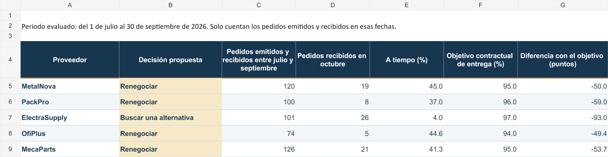
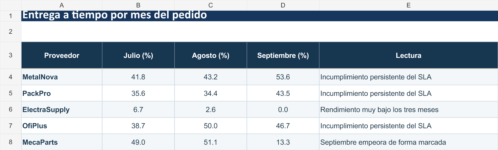

Análisis de proveedores
Vista previa de las tablas de resultados. El archivo Excel conserva las cinco hojas, los 600 pedidos, las fórmulas y los gráficos para una revisión completa.
Resumen de decisiones
La base de servicio incluye 521 pedidos emitidos y recibidos dentro del trimestre. Las tasas de puntualidad se comparan con el objetivo contractual de cada proveedor.

Evolución mensual
La entrega a tiempo se mantiene lejos de los objetivos contractuales en los tres meses analizados.

Caso práctico con datos ficticios. Las recomendaciones son provisionales.